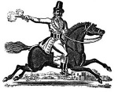

O gösterişli bir hırsız ya da belki de sadece sıradan bir suçluydu. İngiliz bir soyguncu olan Dick Turpin’in (1705-1739) hayatı ölümünün ardından fazlasıyla romantize edilmiştir. Baladlara, filmlere, dizilere konu olan kişi ile gerçek tarihi karakter arasında ise pek bir benzerlik yoktur.

18. yy İngilteresi’nde işlediği cinayetler ve yaptığı soygunlar ile Turpin’in adı oldukça kötüye çıkmıştı. Yakalanıp idam edilene kadar ulusun en çok aranan adamıydı. Onun suç kariyeri İngiltere’nin ilk ücretli yol sisteminin kuruluşu ve yol keserek yapılan soygunculuğun tavan yaptığı döneme denk düşmektedir.
Bir sığır hırsızı olarak başladığı kariyeri boyunca marjinal bir hayat yaşadı. 1735 yılında yalnız çalışmaya başlayana dek hırsızlar ve kaçak avcılardan oluşan bir çetenin üyesiydi. Posta ve nakliye arabalarını soydu. Londra dışındaki Epping Ormanı’nda bir adamı öldürünce başına koyulan ödül daha da yükseldi.
Turpin efsanesinin en önemli olayı ise gerçekte hiç yaşanmamış olabilir. Bir rivayete göre Londra’da Black Bess adında bir at çalmış, atın sahibi durumu farkedince polis çağırmıştı. Polislerle yaşanan silahlı çatışmanın ardından Turpin, atını York’a sürmüş ve peşindeki takipçileri atlatmayı başarmıştı. Tarihle pek az ilişkisi olan bu olay daha sonra halk kültürünün bir parçası haline geldi.
Kuzey İngiltere’ye gelen Turpin at hırsızlığına John Palmer adıyla devam etti. Bir toprak sahibinin dövüş horozunu vurduğu için tutuklanınca yetkililer Palmar’ın aslında Turpin olduğunu anladılar.
18. yy’ın başında İngiliz yasaları, Turpin’in işlediği neredeyse bütün suçlar için idam cezası öngörüyordu. At hırsızlığından mahkum oldu ve 19 Nisan 1739 tarihinde asıldı.
Ek Bilgiler
1- Efsanevi İngiliz soyguncu ile ilgili çok sayıda film yapılmıştır. Başrolünü Richard O’Sullivan’ın (1944–) oynadığı televizyon dizisi “Dick Turpin” ise 1970’lerin sonundan 1980’lerin ilk yarısına kadar dört yıl boyunca yayında kalmıştır.
2- Turpin kalan birkaç poundunu asıldıktan sonra arkasından ağlayacak beş kişiyi tutmak için harcamıştır. Ağlayıcıların her biri on şilin almıştır.
3- Turpin hakkındaki efsanelerin büyük bölümü, Viktorya dönemi romancısı olan William Harrison Ainsworth (1805–1882) tarafından “Rookwood” (1834) isimli kitabında üretilmiştir.